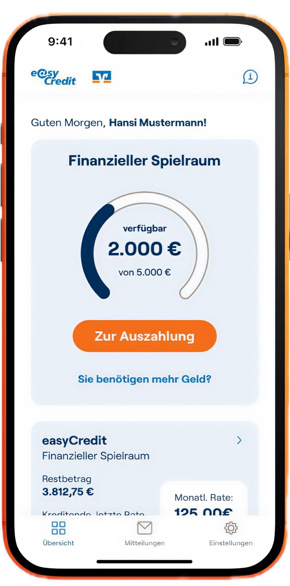

01
Removing friction from a high-stakes credit funnel
Redesigning a financial application flow to surface every step without hiding it behind a swipe.
A. Challenge
A carousel hid steps users had already committed to — discoverability relied on a swipe many never made.
B. Approach
Explored three directions, shipped vertical disclosure cards on an existing design-system component — every step visible, accessible.
C. Outcome
A fully visible, accessible application; post-launch result being instrumented.
Open full case study →
Fintech — Shipped
